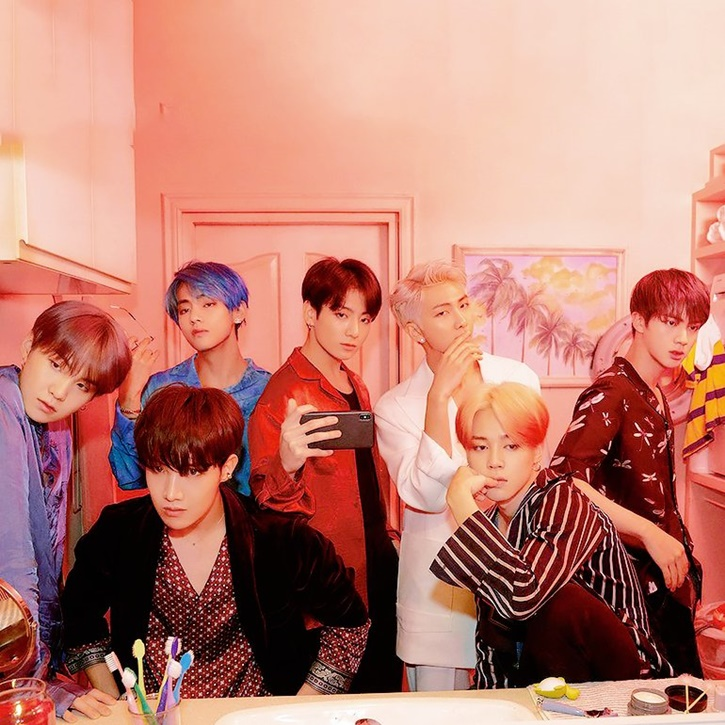
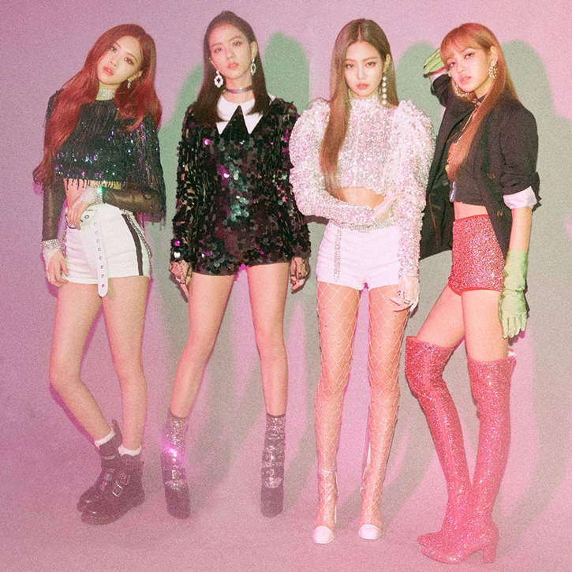
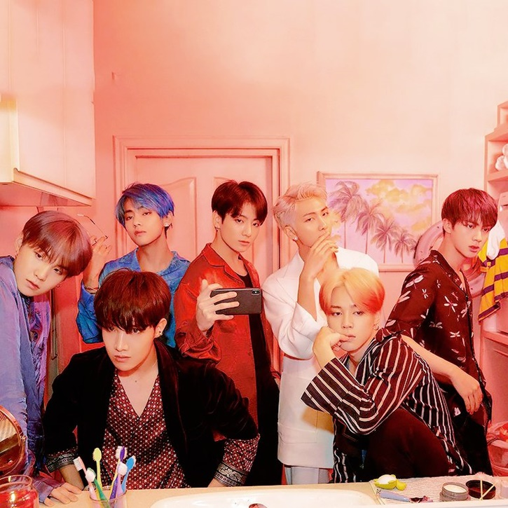
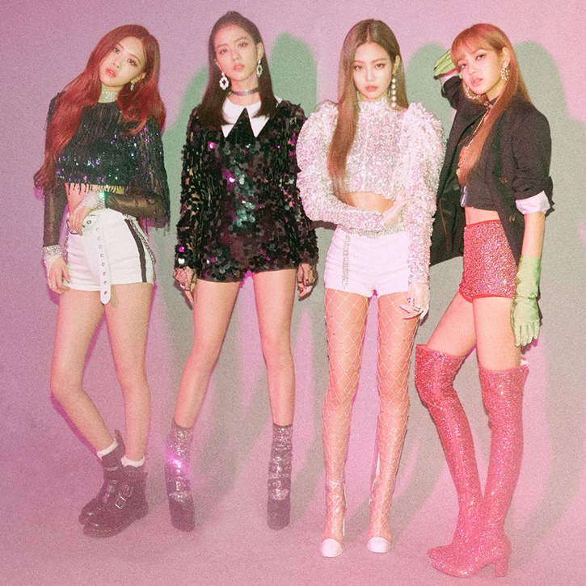

Dlaczego akurat Kpop?
Wiele osób się zastanawia dlaczego Kpop jest tak uwielbianym gatunkiem muzycznym.
Otóż tutaj pojawia się odpowiedź.
Osoby, które zostają idolami świecą przykładem dla młodszego społeczeństwa. Bardzo przykładają wage do relacji
z fanami.
Wytwórnie, które opiekują się artystami przykładają dużą wagę do jakości wypuszczanych piosenek.
Choreografie dla męskich grup bywają bardziej zaawansowane ale w przypadku większego zespołu wygląda to
nieziemsko, kiedy wszyscy wykonują ruchy synchronicznie.
Najbardziej znanym zespołem na ten moment jest BTS (방탄소년단) — znani również jako Bangtan Boys Ich piosenki na Youtubie mają powyżej 100 mln wyświetleń. Najbardziej znana piosenka ich wykonania to 'Dynamite', która aktulanie ma 1,7 mld wyświetleń.
Ostatni comeback: BTS (방탄소년단) 'Yet To Come (The Most Beautiful Moment) 
Zdjęcie z comebacku Of The Soul: Persona
Z kolei przechodząc do najpopularniejszego zespołu żeńskiego — mówimy o BLACKPINK. Ich najpopularniejsza piosenka - 'Ddu-du Ddu-du' na chwilę obecną posiada 2,1 mld wyświetleń. Człońkinie tego zespołu wchodzą w rozmaite współpracez ze znanymi na całym świecie (McDonald, Starbucks, Dior) jak i z artystami (Dua Lipa, Cardi B, Selena Gomez, Lady Gaga).
Ostatni comeback: BLACKPINK - ‘Pink Venom’ M/V 
Zdjęcie z comebacku DDU DU DDU DU
Najbardziej znanym zespołem na ten moment jest BTS (방탄소년단) — znani również jako Bangtan Boys Ich piosenki na Youtubie mają powyżej 100 mln wyświetleń. Najbardziej znana piosenka ich wykonania to 'Dynamite', która aktulanie ma 1,7 mld wyświetleń.
Ostatni comeback: BTS (방탄소년단) 'Yet To Come (The Most Beautiful Moment) 
Zdjęcie z comebacku Of The Soul: Persona
Z kolei przechodząc do najpopularniejszego zespołu żeńskiego — mówimy o BLACKPINK. Ich najpopularniejsza piosenka - 'Ddu-du Ddu-du' na chwilę obecną posiada 2,1 mld wyświetleń. Człońkinie tego zespołu wchodzą w rozmaite współpracez ze znanymi na całym świecie (McDonald, Starbucks, Dior) jak i z artystami (Dua Lipa, Cardi B, Selena Gomez, Lady Gaga).
Ostatni comeback: BLACKPINK - ‘Pink Venom’ M/V 
Zdjęcie z comebacku DDU DU DDU DU
Top 10 zespołów na rok 2023
- BTS
- New Jeans
- BLACKPINK
- IVE
- SEVENTEEN
- LE SSERAFIM
- (G)I-DLE
- EXO
- SHINee
- NCT